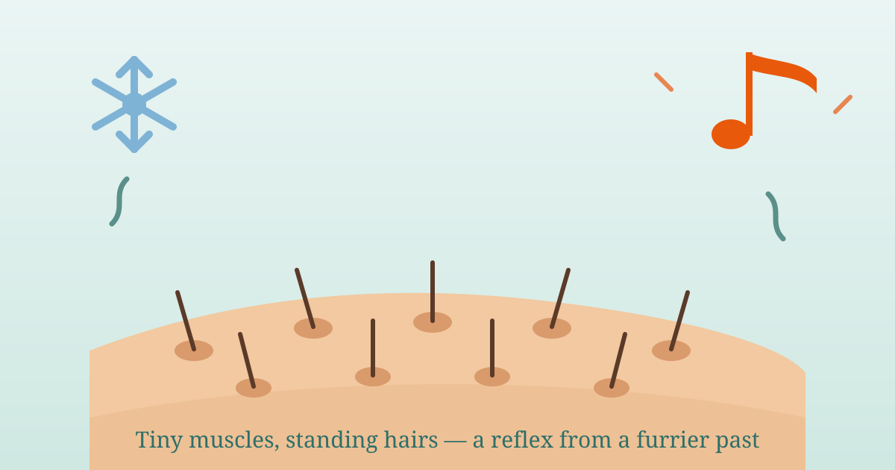

Why Do We Get Goosebumps?

Cold air, a scary scene in a film, a song that hits just right — and suddenly the skin on your arms changes. Tiny bumps rise, the fine hairs stand up, and a shiver runs over you. Goosebumps appear in a second and fade just as fast, and they seem to happen for no clear reason: sometimes you are cold, sometimes you are moved, sometimes nothing obvious has happened at all.
The short answer is that goosebumps are a reflex left over from our furry ancestors. Under each hair on your body sits a tiny muscle, and when it contracts, it pulls the hair upright and dimples the skin around it. The reflex was built to keep animals warm and to make them look bigger when threatened. Humans lost most of their fur, but the wiring stayed — so the same reflex still fires, even though it no longer does much for us.
What a Goosebump Actually Is
A goosebump is a small raised bump on the skin with a single hair standing out of it. The name comes from the look of a plucked goose, whose skin is covered in little bumps where the feathers were. Under your skin, each hair grows out of a tiny pocket called a follicle, and attached to every follicle is a miniature muscle called the arrector pili — Latin for "raiser of hair".
When that muscle contracts, it pulls the base of the hair, the hair stands upright, and the skin around the follicle is tugged into a small mound. That mound is the goosebump. The whole thing happens without any thought from you: the muscle is controlled by the automatic part of the nervous system, the same part that runs your heartbeat and your sweating, so you cannot raise goosebumps on purpose any more than you can blush on command.
The Tiny Muscles Under Your Skin
The arrector pili muscles are some of the smallest muscles in the body, and there are millions of them — one for nearly every hair. They are smooth muscles, the same kind that moves food through your gut, and they answer to signals from the sympathetic nervous system, the branch that prepares the body for action: cold, fear, excitement, and stress.
The signal travels fast. A cold draught touches your arm, sensors in the skin report the drop in temperature, and within a fraction of a second the nerves tell the tiny muscles to contract. The same path carries emotional signals: a piece of music or a frightening moment triggers the brain's emotional centres, and they send the same "contract" message down the same nerves. That shared wiring is why one reflex answers two very different causes.
Why Cold Triggers Goosebumps
Cold is the original trigger, and it makes sense once you picture a furry animal. When the arrector pili muscles contract, the hairs stand up and trap a layer of still air close to the skin. Still air is a poor conductor of heat, so that trapped layer acts like a blanket, slowing the loss of body heat. For a dog or a cat in winter, raised fur genuinely keeps them warmer.
For humans the same trick barely works. We have about as many hair follicles as a chimpanzee, but our hairs are fine and short, so the trapped layer of air is paper-thin. The reflex still fires, the bumps still rise — but the warming effect is almost nothing. It is a little like switching on a heater with the windows open: the mechanism runs, but the result is too small to matter.
That is also why goosebumps come with a shiver. Shivering is the body's serious answer to cold: the big muscles of the arms, legs, and jaw contract in rapid bursts, and every contraction burns energy and releases heat. Goosebumps are the first, gentler response; shivering is the second, stronger one, and the two often arrive together.
Why Strong Feelings Trigger Them Too
If goosebumps are about cold, why does a song give you them? Because the same nerves that respond to temperature also respond to emotion. The sympathetic nervous system does not distinguish between "I am cold" and "I am moved" — it runs the same programme for both, and one of its outputs is the contraction of the arrector pili muscles.
Music is the best-known emotional trigger. The moments that raise goosebumps in music are usually moments of surprise: a sudden change in volume, a voice entering after silence, a harmony shifting in an unexpected direction. The brain's reward system lights up at those moments, releasing a small burst of the same chemicals involved in pleasure — and the skin responds with bumps.
Fear works the same way, and it shows the reflex's second job. In a furry animal, raised hair makes the animal look bigger, which can scare off a rival or a predator: a cat with its fur up looks twice its size. Humans have almost no fur to raise, but the fear signal still fires the muscles, so a frightening film can cover your arms in bumps even though you are sitting in a warm room.
Why We Still Have Them
Goosebumps are an evolutionary leftover, like the appendix or the tailbone: a feature that was useful to our ancestors and never quite disappeared. Early humans were much hairier than we are, and raised fur helped them survive cold nights. As humans lost their body hair — probably to stay cool while running and sweating in hot climates — the warming job of goosebumps faded away, but the muscles and nerves stayed in place.
Evolution rarely removes something harmless, and goosebumps cost almost no energy and last a minute — so the reflex survives as a small visible signal that the body has noticed something.
Common Mistakes
The most common mistake is thinking goosebumps mean you are freezing. They appear at the first sign of cold, long before you are actually in danger of it, and they also appear when you are perfectly warm — during a song, a film, or a moment of awe. The bump itself tells you that the reflex fired, not how cold you are.
Another mistake is believing that goosebumps warm you up in any useful way. On a furry animal they do; on a human they do not, and rubbing your arms or putting on a layer does far more than waiting for the bumps to do their work. A related mistake is thinking you can train yourself to control them: the muscles answer to the automatic nervous system, so willpower alone cannot raise them.
It is also a mistake to read too much into a single bout of goosebumps. Some people get them easily and often, others rarely, and the difference comes down to how sensitive their nerves are and how much hair they have — not to how brave, cold, or emotional they are.
Frequently Asked Questions
Why do some people get goosebumps from music and others don't?
The difference is in how strongly a person's brain responds to unexpected moments in sound. People who get musical goosebumps tend to have stronger links between the brain's sound-processing and emotion-processing areas, so the same song moves one listener and leaves another cold. It is a difference in wiring, not in taste.
Can animals get goosebumps?
Yes — and in furry animals the effect is far more dramatic than in humans. A dog's hackles rising, a cat puffing up its tail, and a porcupine raising its quills all use the same arrector pili muscles. In those animals the raised hair really does trap warm air and make the animal look bigger, which is exactly what the reflex evolved to do.
Why do goosebumps fade so quickly?
The tiny muscles tire fast and the nerve signal fades within a minute or two. If you are still cold, the body moves on to shivering, which generates far more heat. If the trigger was emotional, the feeling passes and the signal stops. Either way, the bumps sink back on their own.
Do goosebumps serve any purpose in humans today?
Almost none for warmth, and none for looking bigger. The one thing they still do is signal: they are a visible sign that your automatic nervous system has reacted — to cold, to fear, or to a strong feeling. Doctors sometimes notice them as a clue that a patient is cold or anxious, but as a tool for survival, they are retired.
Conclusion
Goosebumps are a reflex from a furrier past: tiny muscles under the skin pull each hair upright and dimple the skin, trapping warm air on a furry animal and making it look bigger when threatened. Humans kept the muscles and the wiring but lost the fur, so the same reflex now fires for cold, for fear, and for music — doing almost nothing useful, but showing, in plain sight, that the body has noticed something.